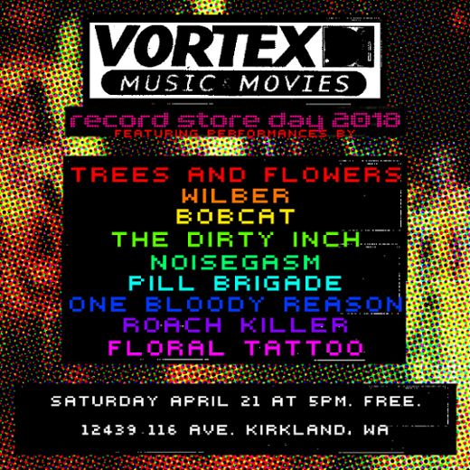

Floral Tattoo
Originally a folk punk-ish solo project, we play louder and yell more now. Sorry if we bum you out.
Alex Anderson: Guitar, vocals
Nico Pellowski: Bass
Christian Taylor: Drums, percussion
Gwen Power: Guitar, synth, vocals, melodica, organ
Want to book us for a gig? We want you to too! Go here for more details.
Upcoming Shows
-
Le Voyeur Jun. 30th, 10pm-1am
Join us in Olympia, WA at Le Voyeur (for a very late night)!
- Chromatic Colors - jazz-pop-funk fusion from Salem, OR
- the Ferenjis - garagefunk from Salem, OR
- Floral Tattoo - dreampop, sparklepunk from Kirkland, WA
Find the Facebook Event here
-
Record Store Day at Vortex April 21st, 6pm - Whenever
free show!!! Featuring: a fuck ton of people
Find the Facebook Event here
-
Victory Lounge Mar 20th
800 Pennies (or $8) at the Door.
Yeah we know it's a Tuesday and you have to wake up to that job you oh so love to go to but why not disappoint your peers even more by going to a punk show? Jus' sayin'